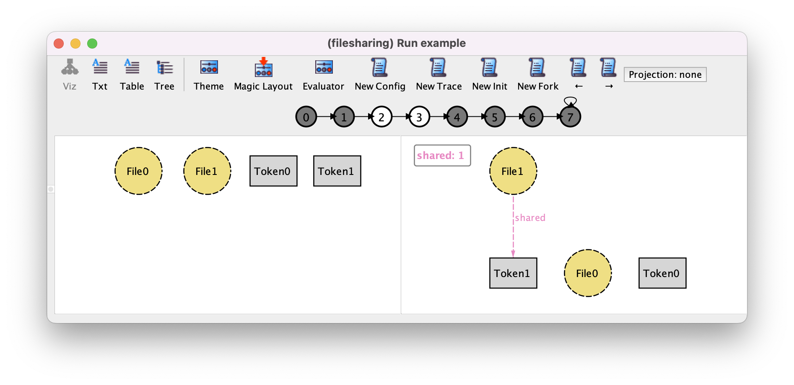

A temporal logic primer#
Caution
This chapter is still under construction
Everything is a trace!#
In chapter Structural modeling, we detailed how Alloy relies on relational logic. As a matter of fact, the language also relies on temporal logic in order to reason over the behaviors of a system, as we saw in chapter Behavioral modeling.
But what do we mean by that? In Alloy, this means that we view a system as the set of all its execution traces:
Every such trace is a feasible infinite sequence of states of the system.
Here, “feasible” means that each trace much follow the constraints of the model. The constraints of the model include the Alloy facts and the constraints that are included in the signature declarations, such as the multiplicity constraints.
In a state, a value is associated with each relation.
Let us consider for instance the following trace of our file sharing web app:

In this scenario, which we will use as an illustrating example in the following, there are two files and two tokens. A file is depicted in red if it is shared. Tokens are not represented in the picture.
Let us define this scenario in Alloy terms. The set of atoms (the universe) consists of the two files and the two tokens, which are named after their signature name by Alloy: File0, File1, Token0, Token1. Alloy Analyzer produces the following view for this scenario. We use here the same visualization theme as in chapter Behavioral modeling: the files are depicted as circles and the tokens as grey rectangles, the files that are not currently uploaded are in white, the uploaded ones are in yellow, the trashed ones are in red. This view focuses on the first two states (state 0 and state 1).
All along the trace, the signatures File and Token have the same value (because they are static signatures) which is:
File = {(File0), (File1)}
Token = {(Token0), (Token1)}
Now, if we look at the content of the first two states, we see that
in the initial state, the signatures
uploaded,trashedand the fieldsharedare empty,in the second state,
uploaded = File1,trashedandsharedare empty.
The following view focuses on the 3rd and 4th states (state 2 and state 3) of the trace, corresponding to the transition where one file is shared.
We can see that in state 2 (left-hand side) shared is empty, and that in state 3 (right-hand side) shared = {(File0, Token1)}.
In the following, we will use this scenario to illustrate the temporal connectives.
Temporal connectives#
The constraints of the model are expressed in Alloy’s logic, which combines relational logic and Linear Temporal Logic (LTL) [FOCS77]. The obtained logic is named Relational Linear Temporal Logic (RLTL). A formula is interpreted in a given state of a given trace. The meaning of relational connectives is described in detail in section ADD REF relational-logic:. Let us now focus on the connectives of LTL, which are listed above:
Future-time connectives |
Past-time connectives |
|
|
|
|
|
|
|
|
|
|
Given a trace (which we keep implicit in the following table), the interpretation of every connective is given in the state of index \(i ≥ 0\).
We consider that a trace satisfies a formula if its first state (state \(0\)) satisfies it.
Future-time connectives#
The following table shows the semantics of the future-time connectives.
Connective |
Meaning |
|
|
|
|
|
|
|
|
|
or for all state \(j ≥ i\) |
To illustrate the connectives, here are some examples of formulas, which are satisfied in the initial state of the trace that is shown above. Notice that they do not necessarily hold in all the possible traces of the file sharing example.
after some uploadedeventually some trashedalways (some f:File | upload[f] implies after some uploaded)(some f: File | upload[f]) until (some f: File, t: Token| share[f, t])(some f: File | delete[f]) releases no trashed
As in relational logic, some connectives can be defined in terms of others. In particular, it is known that after and until are sufficient to defined all other future-time connectives. For example, eventually P is the same as (not P) until P, always P is the same as not eventually not P and P releases Q is the same as not ((not P) until not Q).
Past-time connectives#
The semantics of the past-time connectives is given in the table below.
Connective |
Meaning |
|
\(i>0\) and |
|
|
|
|
|
|
|
or for all states 0 ≤ j ≤ i |
As examples, let us consider the following formulas, which hold in the 4th state of our illustrating scenario. Again, they do not necessarily hold in other states of the trace nor in other traces of the file sharing model.
some shared and before no sharedonce no uploadedsome t: token | historically t not in File.sharedFile = uploaded since some f:File | upload[f](some f: File | upload[f]) triggered after some uploaded
Interpretation in the initial state#
As we said above, we consider that a trace satisfies a formula if its initial states satisfies it. A practical consequence is that a formula in Alloy (whether it is a fact` or a property in a check or run command) is interpreted in the initial state of a trace. So, past-time connectives only make sense if they appear in the scope of future-time connectives. For instance, consider the following formula, meaning that some token has never been used: some t: Token | historically t not in File.shared. Interpreting this formula in the initial state of a trace makes it the same as some t: Token | t not in File.shared, which means that some token is not used. In other words, the past-time connective is useless. However, if historically is in the scope of a future-time connective, such as always, it can be useful. For instance, the formula all f: File, t: Token | always (share[f, t] implies historically t not in File.shared means that each time a file is shared with a token, this token has never been used before.
On the expressiveness of Alloy’s temporal logic#
Are past-time connectives really useful?#
A well known theoretical result for LTL is that past-time connectives do not add any expressiveness to the logic [POPL80]. In other words, after and until are enough to express any property that is expressible in LTL. However, we also know [EATCS03] that past-time connectives allow for exponentially more succinct formulas, which make it very useful in practice.
What do you mean: temporal?#
In the literature, there are in fact several kinds of temporal logics. Their purpose is to reason over the behavior of a system, but they differ on all sorts of aspects. In the literature, the temporal logic at work in Alloy is referred to as Linear Temporal Logic (LTL) or sometimes Linear Temporal Logic with Past (PLTL). Although this is probably the most commonly used temporal logic, some kinds of temporal reasoning are not possible with LTL. For instance, if one needs to reason about different possible execution traces, a branching-time temporal logic, such as Computation Tree Logic (CTL) [LP81], must be used instead of a linear-time temporal logic. In order to reason about the amount of time between different states, some other kind of temporal logics, which are called timed logics [LICS90], can be used.
Why does Alloy only consider infinite traces?#
There exist some frameworks where the length of traces can be finite. This makes the meaning of temporal connectives tricky. For instance, what is the meaning of after P in the last state of a finite trace? Defining it as either \(true\) or \(false\) would be sensible [CAV03]. But in any case, the sames choice applies to after not P. Now, not after P is not equivalent to after not P, which is admittedly counter-intuitive. A solution to avoid these issues is to consider infinite traces only. Remark that it is easy to simulate a finite behavior with an infinite trace, by considering a self-loop on the last state. This is in particular possible in case the Alloy model includes a stuttering event (see Stuttering and chapter Specifying the protocol dynamics).
Why does Alloy only show lasso traces?#
Remark that some infinite traces cannot be represented by lasso traces: consider for instance the trace depicted below where P is true once in the first state, and then twice in the 3rd and 4th states, and then three times, and so on. This trace does not end by a repeating sequence. Therefore it cannot be represented by a lasso trace. However, a theoretical result for LTL called the Small Model Property (SMP) [JACM85] states that if a constraint has a trace that satisfies it, then it has a lasso trace that satisfies it. In other words, if there is no lasso trace satisfying a constraint, then there is no trace at all, which makes it enough to only search for lasso traces.
Does an Alloy model necessarily follow the usual shape of a transition system ?#
As it is presented in chapter Behavioral modeling, it is a good practice to specify an Alloy model as a transition system: a constraint (without any temporal connective) corresponds to the initial states and another constraint imposes that one action (or a stuttering step) occurs in every state. However, you can also specify arbitrary temporal formulas as constraints of the model. Then, such formulas constrain the whole execution instead of only constraining the initial state and each transition. This can be useful to abstract away the behavior of some part of the model that we do not want to specify in detail. This is typically the role of fairness assumptions, such as the one we specified in chapter Behavioral modeling related to the part of the system in charge of emptying the trash periodically. This assumption says that if the empty action becomes continuously enabled, then it will eventually occur.
fact fairness_on_empty {
always (
always some trashed implies
eventually empty
)
}